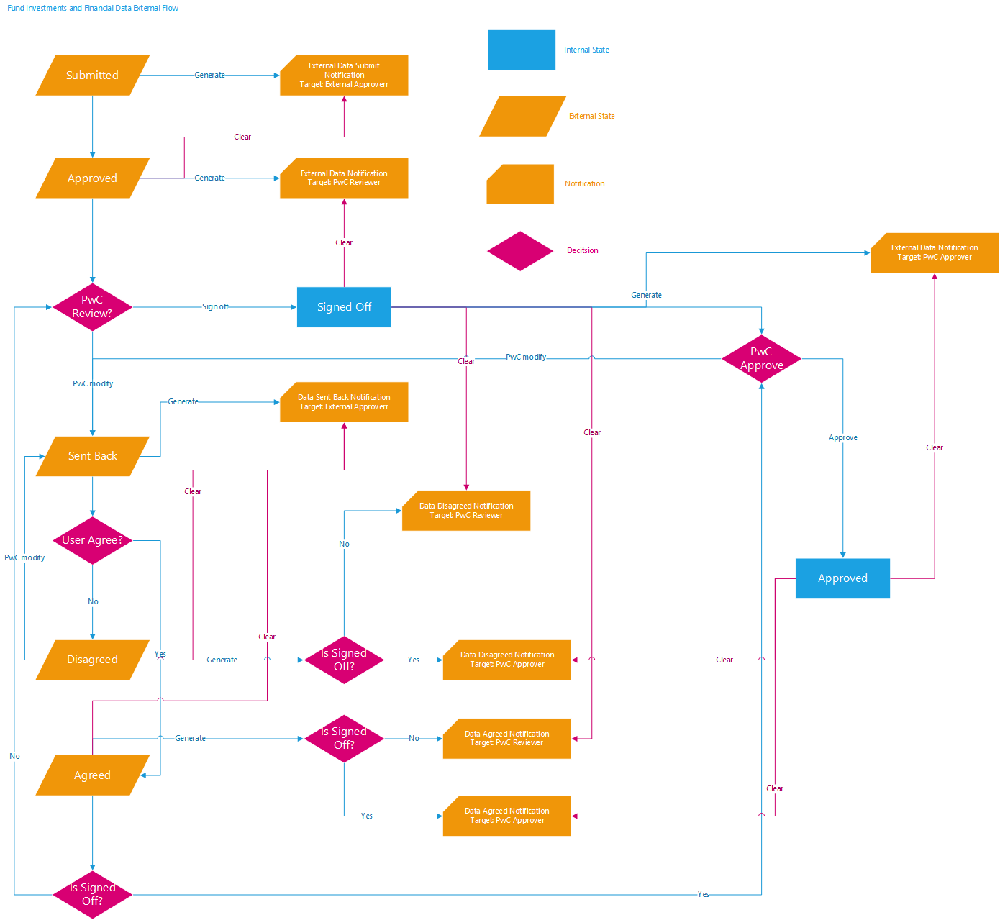

Notification desgin
Notification workflow
In PFIC ,external investment notifications will be generated and cleared when data reaches a specific state (as shown in following diagram)

It’s very complex workflow and also not want this notification flow design will impact the business logic.
Design code
- Controller
-
import scala.concurrent.{Await, Future} def upload(companyId: String, year: Int, operationType: String) = deadbolt.Pattern(value = "(v_pwc)|(v_mycompany)", patternType = PatternType.REGEX)(parse.multipartFormData(maxLength = 1024*1024)) { implicit request => request.body.file("file").map { file => try{ ... companyfinancialdataServiceWrite.updateFinancialData(request.session.get("email").getOrElse(""), request.subject, financialData).map(res => {Ok("success")}) } } - Service
-
override def updateFinancialData(currentUserEmail: String, subject: Option[Subject], financialData: FinancialdataGetFromFrontend): Future[Unit] = { validateUserUtil.validateExternalUserPermissionForCompany(subject, financialData.companyId, financialData.year).map(_ => { ... var newFinancedata = waitForUpdateFinancialDataAndGenerateNotification(currentUserEmail, subject, financialData, companyuser) ... }) } private def waitForUpdateFinancialDataAndGenerateNotification(userEmail: String, subject: Option[Subject], financialData: FinancialdataGetFromFrontend, companyuser: Option[Companyuser]) = { val currentUserPrivileges = subject.map(s => s.permissions.mkString(",")).getOrElse("") val newFinancedataAndNotification = checkPermissionThenGetFiDataAndNotification(financialData, userEmail, currentUserPrivileges, companyuser) val newFinancedata = newFinancedataAndNotification.financialData val newNotifications = newFinancedataAndNotification.notification val futureUpdateFinancialdata = update(newFinancedata) var resultUpdateFinancialdata = "failed" futureUpdateFinancialdata onComplete { case util.Success(value) => { resultUpdateFinancialdata = "success" waitForClearNotifations(newFinancedata.companyId, newFinancedata.year, financialData.operationType) notificationWrite.waitForCreateNotifications(newNotifications) } case scala.util.Failure(exception) => throw new Exception(exception.toString) } Await.result(futureUpdateFinancialdata, Duration.apply(10.toLong, duration.SECONDS)) newFinancedata } - WorkflowUtil
-
import java.sql.Timestamp override def checkPermissionThenGetFiDataAndNotification(dataFrontEnd: FinancialdataGetFromFrontend, email: String, privilege: String, companyuser: Option[Companyuser]) = { val currentFinancialData: Financialdata = companyfinancialdataServiceRead.waitForLookupWithDefaultValues(dataFrontEnd.companyId, dataFrontEnd.year) match { case Some(data) => data case None => throw new Exception("Financial data doesn't exist") } FinancialDataWorkflowUtils.checkRolePermissionThenGetFiDataAndNotification(dataFrontEnd, currentFinancialData, email, privilege, companyuser) } def checkRolePermissionThenGetFiDataAndNotification(dataFrontEnd:FinancialdataGetFromFrontend, currentFinancialData:Financialdata, user:String, privilege:String, companyuser:Option[Companyuser]):NextFinancialDataAndNotification= { val now = TimeService.currentTime val companyuserName = companyuser.map(_.name).getOrElse("") val workflowState = WorkflowState(currentFinancialData.internalState, currentFinancialData.externalState,currentFinancialData.modifiedByExternal, currentFinancialData.uploadFilesByExternal) OperationTypes.withName(dataFrontEnd.operationType.toUpperCase) match { case OperationTypes.external_data_save => externalSave(dataFrontEnd,currentFinancialData,user, privilege, now,companyuserName) case OperationTypes.external_file_save => externalFileSave(dataFrontEnd,currentFinancialData,user, privilege, now,companyuserName) case OperationTypes.external_data_finalize => externalFinalize(dataFrontEnd,currentFinancialData,user, privilege, now,companyuserName) case OperationTypes.external_data_approve => externalApprove(dataFrontEnd,currentFinancialData,user, privilege, now,companyuserName) case OperationTypes.file_save => internalFileSave(dataFrontEnd,currentFinancialData,user, privilege, now,companyuserName) case OperationTypes.data_save => { if(currentFinancialData.modifiedByExternal.getOrElse(false) && !StatusHelper.isInternalApproved(workflowState) && !( workflowState.externalState.getOrElse(None) == ExternalState.ApprovedOnlyFiles)) sentBack(dataFrontEnd,currentFinancialData,user, privilege, now,companyuserName) else internalSave(dataFrontEnd,currentFinancialData,user, privilege, now,companyuserName) } case OperationTypes.external_data_agree => agree(dataFrontEnd,currentFinancialData,user, privilege, now,companyuserName) case OperationTypes.external_data_disagree => disagree(dataFrontEnd,currentFinancialData,user, privilege, now,companyuserName) case OperationTypes.data_finalize => internalFinalize(dataFrontEnd,currentFinancialData,user, privilege, now,companyuserName) case OperationTypes.data_signOff => internalSignOff(dataFrontEnd,currentFinancialData,user, privilege, now,companyuserName) case OperationTypes.data_approve => internalApprove(dataFrontEnd,currentFinancialData,user, privilege, now,companyuserName) case _ => throw UnAuthorizationException("Operation type doesn't exists") } } def externalSave(dataFrontEnd:FinancialdataGetFromFrontend, currentFinancialData: Financialdata, user:String, privilege:String, now: Timestamp, companyuserName:String) = { val workflowState = WorkflowState(currentFinancialData.internalState,currentFinancialData.externalState,currentFinancialData.modifiedByExternal, currentFinancialData.uploadFilesByExternal) var modifiedByExternal = getModifiedByExternal(dataFrontEnd, currentFinancialData) if(actionsValidator.validateExternalSave(privilege,workflowState)) { val newfdata = currentFinancialData.copy(currencyId = dataFrontEnd.currencyId,assetdata = dataFrontEnd.assetdata, liabilitydata = dataFrontEnd.liabilitydata, profitlossdata = dataFrontEnd.profitlossdata, fmvdata = dataFrontEnd.fmvdata, ordinaryearningsandgain = dataFrontEnd.ordinaryearningsandgain, modifiedByExternal = modifiedByExternal) val noti = Nil NextFinancialDataAndNotification(newfdata,noti) } else throw UnAuthorizationException() } - DataStructure
-
case class FinancialdataGetFromFrontend(id: Long, year: Int, companyId: String,currencyId: String, assetdata: Option[String] = None, liabilitydata: Option[String] = None, profitlossdata: Option[String] = None, fmvdata: Option[String] = None, ordinaryearningsandgain: Option[String] = None, operationType:String, //The operation type will find the msg:Option[String], owAssetdata: Option[String] = None, owLiabilitydata: Option[String] = None, owProfitlossdata: Option[String] = None,incorporationdate: Option[String] = None, uploadFilesByExternal: Option[Boolean] = None) case class NextFinancialDataAndNotification(financialData:Financialdata,notification:Seq[Notification]) case class Notification(var id: String, notificationType: NotificationType.NotificationType, notificationDataType: NotificationDataType.NotificationDataType, description: Option[NotificationDescription], status: Boolean, entityname: Option[String], link: String, year: Int, triggerAt: java.sql.Timestamp, triggerBy: Option[String])
0.1.0*